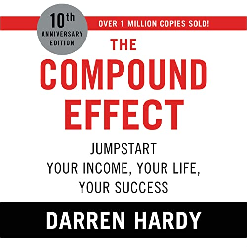

Library › Self-Improvement
The Compound Effect — Summary & Key Lessons

Jumpstart your income, your life, your success — small, smart choices + consistency + time = radical difference.
📖 OPEN THE FULL INTERACTIVE BREAKDOWN →🌐 Read it in Hindi, Hinglish, Gujarati, Tamil & 22 more languages — free, with audio.
💡 The Big Idea
Hardy — longtime publisher of SUCCESS magazine with a front-row seat to thousands of achievers — strips success to one formula: small, smart choices, consistently applied over time. The Compound Effect is always working, for you or against you: the daily muffin, the nightly hour of TV, the skipped workout all compound as surely as the invested dollar. The system: take radical responsibility and track your choices (awareness precedes change), harness habits by engineering your triggers, build unstoppable momentum ('Big Mo') through routine and rhythm, audit your influences (input, associations, environment), and then hit accelerators — doing the extra rep AFTER your limit, when multipliers are highest. No magic, no overnight anything: boring consistency IS the secret everyone keeps searching past.
🧠 The 6 Key Lessons
Lesson 1: The Magic Penny: Compounding Beats Talent
Chapter 1: The Compound Effect in Action
Offered $3 million cash today or a penny that doubles daily for 31 days, most people grab the millions — and lose: the penny path ends at $10.7 million, with virtually all the growth arriving in the final days. That's the Compound Effect's signature: invisible for ages, then unstoppable — which is exactly why people abandon good habits (no visible payoff by week three) and coast on bad ones (no visible damage by year three). Hardy's three friends parable makes it human: identical men make tiny divergent choices — one shaves 125 calories daily and reads 30 minutes, one adds a cheap cocktail and a bigger TV, one changes nothing. At month five: zero visible difference. At month thirty-one: one is fit, promoted, thriving; one is heavier, dimmer, blaming luck. Same starting line; the divergence was never dramatic on any single day.
📖 Example: Hardy's own money proof: he saved 10% of every paycheck from his first job — painless, mocked by peers — and the account crossed $1 million before age thirty via nothing but rate, consistency, and time. His counter-example is American average-ness: the… Read the full example →
⚡ Do this: Pick your penny: one small daily action in the area you most want to change (10 pages, 15 minutes, 10% saved). Commit to 31 days minimum before judging results — the curve bends late by design.
Lesson 2: Track Everything: Awareness Precedes Change
Chapter 2: Choices
You're always making choices — but most are unconscious, which is how people 'sleepwalk' into lives they never chose: nobody decides to become 40 pounds heavier or estranged; they decide nothing, repeatedly. Hardy's non-negotiable first discipline: TRACK. Pick the area you want to change and write down every relevant action for at least a week (every rupee spent, every bite eaten, every minute online) — the act of tracking alone alters behavior, because awareness kills autopilot. Pair it with 100% ownership: luck, timing, and circumstance are real, but the only lever you hold is your response — and Hardy's luck formula (Preparation + Attitude + Opportunity + Action) puts three of four terms inside your control. The tracked life is the steerable life.
📖 Example: Hardy tracked his way out of every plateau he describes: the week he logged spending, dozens of unconscious dollars surfaced (the daily this, the automatic that) — money he redirected into investments without feeling poorer. His coaching clients repeat the… Read the full example →
⚡ Do this: Choose ONE category (money, food, screen time) and track every unit for seven days in a small notebook or app — no judging, just recording. On day eight, circle the three entries that shocked you and redirect them.
Lesson 3: Kill Bad Habits at the Trigger, Install Good Ones With Why-Power
Chapter 3: Habits
Willpower loses; systems win. Hardy's bad-habit protocol: identify your triggers (the Big 4 — who, what, where, when precede every vice), clean house (make the vice physically unavailable — the alcoholic shouldn't own a wine cellar), swap rather than delete (replace the routine that follows the trigger), and ease in OR go cold-turkey by personality — but decide deliberately. Good-habit installation runs on WHY-POWER, not willpower: a goal without a burning reason quits at the first cold morning; connect the habit to your core motivation — something you'd walk a plank between skyscrapers for (your kids, your freedom) — and discipline stops being the operative force. Set up visible accountability, celebrate small wins, and give any new habit at least three weeks of scaffolding before expecting it to stand alone.
📖 Example: Hardy's plank image: no amount of money gets most people to walk an I-beam between hundred-story towers — but every parent crosses instantly if their child is on the other side. Same plank, different WHY. His personal application: assigned to run a marathon… Read the full example →
⚡ Do this: For your worst habit: log its Big 4 triggers for a week, then remove or reroute the strongest one. For your target habit: write the plank-worthy WHY at the top of the page, schedule it at a fixed trigger, and recruit one weekly accountability check.
Lesson 4: Big Mo: Routines, Rhythm, and Consistency
Chapter 4: Momentum
Momentum ('Big Mo') is success's hidden multiplier: brutally hard to start — like a hand-pumped well, you crank forever before the first trickle — then nearly self-sustaining once flowing. But Mo only visits the consistent. The machinery: bookend your days (own your first and last hours with set routines — the middle of the day belongs to chaos, the edges belong to you), build weekly/monthly RHYTHMS (recurring workouts, date nights, reviews) that don't rely on daily decision-making, and treat consistency itself as the skill — the pump loses pressure completely if you stop cranking even briefly, and restart costs dwarf continuation costs. Hardy's registry: it's not the occasional heroic effort that compounds; it's the boring cadence kept through rain.
📖 Example: Hardy's morning bookend, described minute-by-minute: wake before dawn, review his top goal, read something instructive, then attack the day's most important task before the world's inputs arrive; his evening bookend reverses it — review, gratitude, prep… Read the full example →
⚡ Do this: Design your two bookends this week: a 30–60 minute morning routine and a 15-minute evening shutdown, written as checklists. Add one weekly rhythm (same day, same time) for your most important goal — and protect the streak over the intensity.
Lesson 5: Guard Your Inputs, Then Multiply: The Extra Rep
Chapters 5–6: Influences / Acceleration
Your choices are shaped upstream by three influences you must curate: INPUT (garbage in, garbage out — trade an hour of news/scroll for instructive audio and your brain's default thoughts change), ASSOCIATIONS (you become the combined average of the people you spend most time with — audit your circle into 'expand, limit, disassociate' lists; find a peak-performance partner and buy access to mentors through books if not in person), and ENVIRONMENT (clutter, chaos, and low standards silently set your ceiling). Then, with the base compounding, hit ACCELERATORS: the moments of 'hitting the wall' are multiplier moments — doing the extra rep, the five more minutes, the unexpected extra when everyone else stops, compounds disproportionately because so few ever go there. Do what others won't: better than expected, more than required, with a wow factor. Viewer discretion: this only multiplies what consistency already built.
📖 Example: Hardy's radio habit rebuilt his vocabulary of thought: driving time converted to 'automobile university' — hundreds of hours of instruction yearly at zero cost. His association audit is the chapter readers quote: he literally listed everyone he spent time… Read the full example →
⚡ Do this: This month: replace 30 daily minutes of feed-scrolling with instructive audio; sort your associations into expand/limit/disassociate and act on one name per list; and once daily, when you hit your usual stopping point — do one deliberate extra rep, page, call, or polish.
Lesson 6: The Compound Effect of Relationships: Your Network Is Your Net Worth
Part 3: The Application
Hardy extends his compounding framework to people: relationships compound exactly like money — small daily deposits of attention, kindness and help grow into networks of trust that pay interest for decades, while neglect compounds into isolation. The strategy is boring and powerful: nurture a few relationships consistently rather than collecting hundreds of acquaintances. The daily deposit can be tiny — a check-in message, a genuine compliment, remembering a detail — but the compound effect rewards regularity over size. The people in your corner are the ultimate asset: they compound not just emotionally but practically, through opportunities, referrals and support when life dips.
📖 Example: Hardy describes how a single monthly call to each of a handful of key contacts — fifteen minutes, no agenda, genuine interest — transformed his business through referrals and openings that no advertising budget could have bought. The deposits were small; the… Read the full example →
⚡ Do this: Pick 5 key people in your life. Schedule one small, genuine contact with each this month — a message, a call, a note — with no agenda other than connection. Repeat monthly and watch the balance.
✅ 5-Step Action Plan
- Choose your magic penny and protect it for 31 days minimum.
- Track one category for seven days; redirect the three shockers.
- Remove your worst habit's strongest trigger; anchor the new habit to a plank-worthy WHY.
- Install morning and evening bookends plus one weekly rhythm.
- Curate inputs and associations; do the extra rep daily after 'done.'
💬 Best Quotes from The Compound Effect
- “Small, smart choices + consistency + time = radical difference.”
- “You will never change your life until you change something you do daily.”
- “It's not the big things that add up in the end; it's the hundreds, thousands, or millions of little things that separate the ordinary from the extraordinary.”
Interactive version: mark lessons as read, listen in your language, share quote cards.